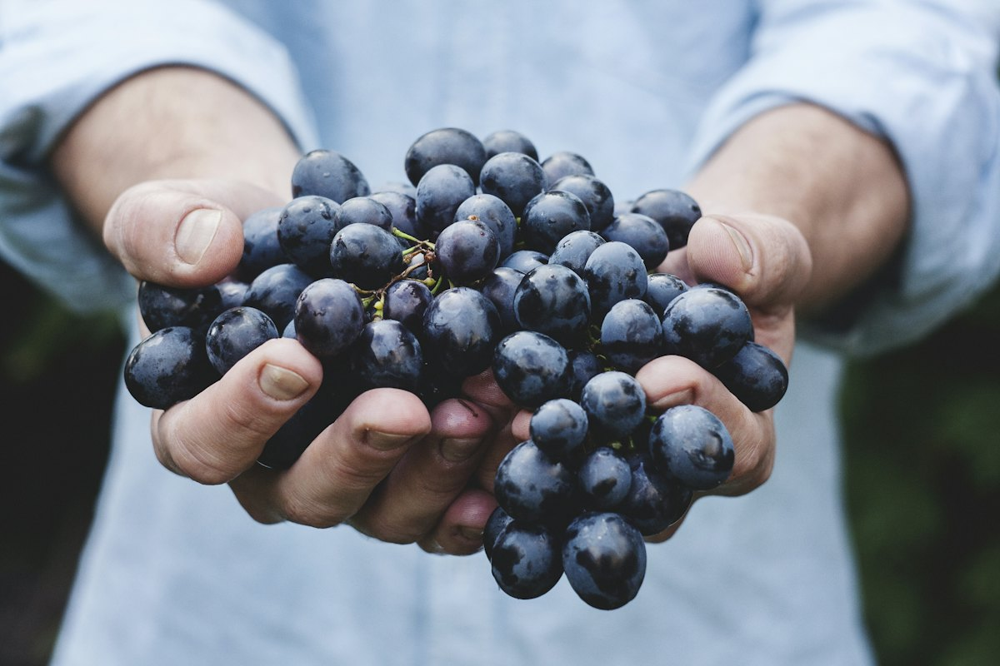
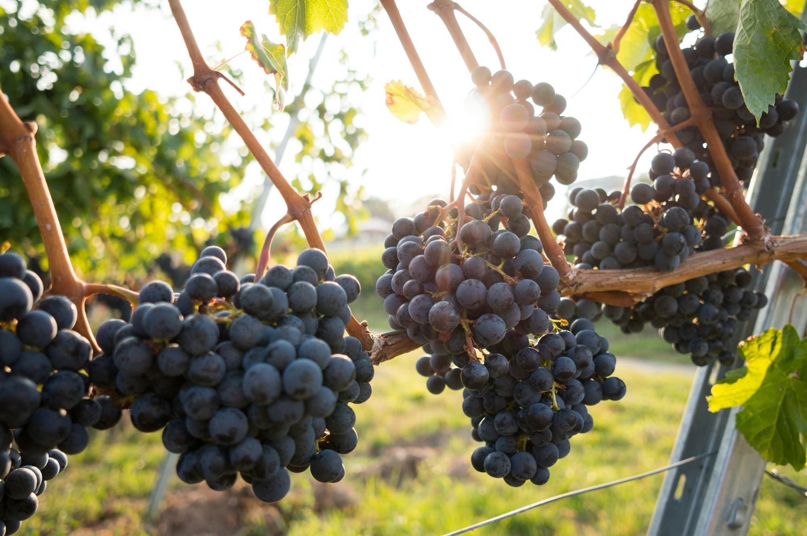
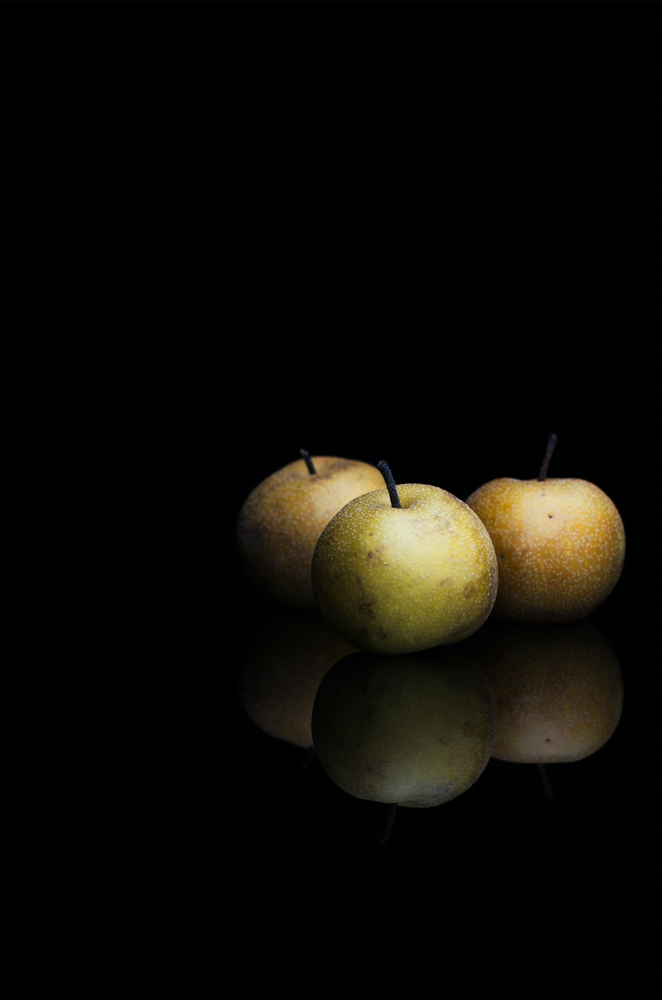
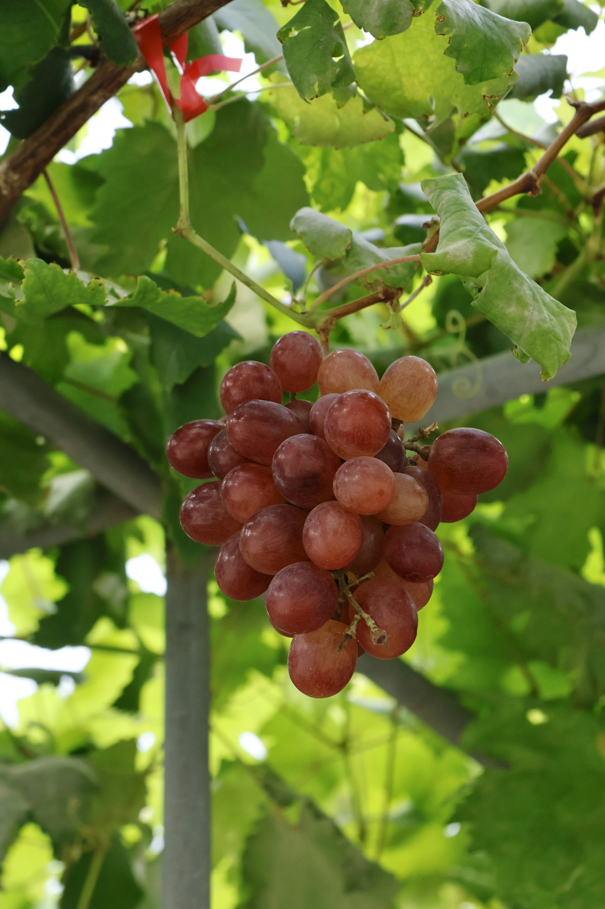
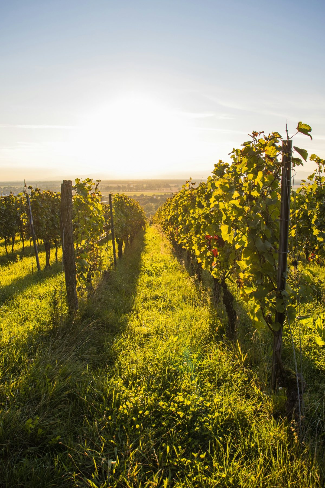

ぶどう狩り
デラウエアは7月上旬から収穫できます。

ぶどう・梨の観光果樹園 宮崎県都農町
宮崎県の中央、尾鈴山を仰ぐ都農町の観光果樹園です。ぶどうと梨に麦飯石を使った、天然ミネラル栽培をしています。
7月上旬から
色づく、
ぶどう。
スクロールすると、ぶどうが色づいていきます。
3Dのイメージです
まるみ園のこだわりは、天然ミネラル栽培。ぶどうと梨に麦飯石を使い、安全で美味しい果物を育てています。
今年のぶどう・梨は全て終了しました。ありがとうございました。来年は7月上旬に開園します。予約してからお越しください。

デラウエアは7月上旬から収穫できます。

みずみずしい梨を、木からもいで。

ぶどう・梨ともクール便でお送りします。

| 開園 | 7月上旬から（要予約） |
|---|---|
| 今シーズン | ぶどう・梨は全て終了しました |
ぶどう・梨狩りや贈答用のご予約は、お電話・FAX・メールでどうぞ。